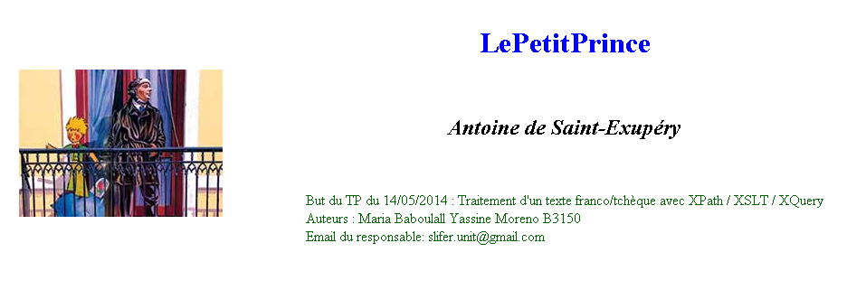
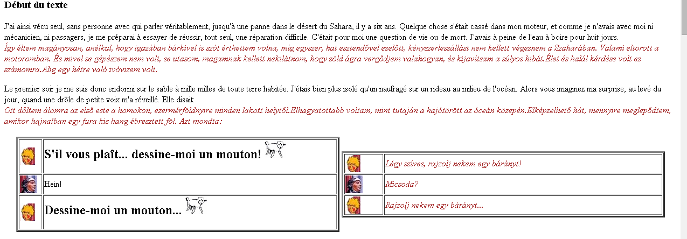
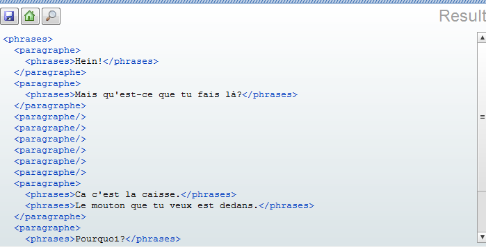
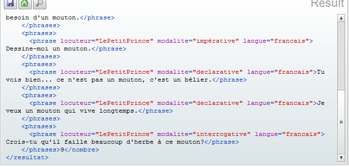

Mise à jour de l'instance XML :
Erreur détéctée : The content of element type "info_traitements" must match "(but,mise_en_forme_par,email,date)".
Diagnostic : Créateurs, n° de Binome et date erronés, email manquant. (Element But correct).
Traitement :
<info_traitements>
<but>Traitement d'un texte franco/tchèque avec XPath / XSLT / XQuery</but>
<mise_en_forme_par>
<unCreateur>Maria Baboulall</unCreateur>
<unCreateur>Yassine Moreno</unCreateur>
<NoBinome>B3150</NoBinome>
</mise_en_forme_par>
<email>slifer.unit@gmail.com</email>
<date>14/05/2014</date>
</info_traitements>
L'ordre des elements étant important.
Expression XPATH :
1. Selectionner les auteurs de la mise en forme :
//unCreateur
On utilise le chemin relatif (descendant-or-self)

2. Les paragraphes de dialogue :
//paragraphe[@type='dialogue']
Utilisation de prédicats

3. Les phrases en français
//phrase[@langue='francais']

4. La deuxième phrase de chaque paragraphe
//phrase[position()=2]

5. La dixième phrase du texte
(//phrase)[10]
On aplatit le chemin pour faire sortir "phrase" de son contexte. (utilisation de parenthèses)

6. Les phrases contenant le mot "mouton"
//phrase[contains(string(.),'mouton')]
Utilisation de la fonction string() pour extraire le texte du noeud et le comparer à "mouton"

Mise en
forme du corpus Le Petit Prince [XSLT]
La
mise en forme du document demandé passera par une feuille de style
"petit_prince_3IF.xsl" qui implementera les différentes règles
s'appliquant aux éléments du document XML
Règle générale :
<?xml version="1.0" encoding="UTF-8"?>
<!-- New document created with EditiX at Wed May 14 15:24:45 CEST 2014 -->
<xsl:stylesheet version="1.0" xmlns:xsl="http://www.w3.org/1999/XSL/Transform">
<xsl:output method="html"/>
<xsl:template match="/">
<html>
<head>
<meta content="text/html; charset=UTF-8" http-equiv="Content-Type"/>
<title>
<xsl:value-of select="//titre"/>
<xsl:text> de </xsl:text>
<xsl:value-of select="//auteur"/>
</title>
</head>
<body style="background-color:white;">
<xsl:apply-templates/>
</body>
</html>
</xsl:template>
Règles Spécifiques :
<xsl:template match = "corps">
<hr/>
<h3>Début du texte </h3>
<xsl:apply-templates/>
<h3>Fin du texte </h3>
<hr/>
</xsl:template>
Cette règle encadre l'ensemble du corps de texte entre 2 lignes horizontales, "début du texte" et "fin du texte"
<xsl:template match="en-tete">
<table align="center" cellspacing="50" >
<tbody>
<tr>
<td>
<xsl:apply-templates select="couverture"/>
</td>
<td>
<xsl:apply-templates select="titre | auteur | info_traitements "/>
</td>
</tr>
</tbody>
</table>
</xsl:template>

<xsl:template match="image">
<div align="center">
<img>
<xsl:attribute name="src">
<xsl:value-of select="@chemin"/>
</xsl:attribute>
</img>
</div>
</xsl:template>
<xsl:template match="titre">
<h1 style="text-align:center; color:blue;">
<xsl:apply-templates/>
</h1>
</xsl:template>
<xsl:template match="auteur">
<br/>
<h2 style="text-align:center; font-style: italic;">
<xsl:apply-templates/>
</h2>
<br/>
</xsl:template>
<xsl:template match="info_traitements">
<blockquote style="color :darkgreen;">
<xsl:text> But du TP du </xsl:text> <xsl:value-of select="date"/>
<xsl:text> : </xsl:text> <xsl:value-of select="but"/>
<br/>
<xsl:text> Auteurs : </xsl:text>
<xsl:for-each select="mise_en_forme_par/unCreateur">
<xsl:value-of select="."/> <xsl:text> </xsl:text>
</xsl:for-each>
<xsl:value-of select="mise_en_forme_par/NoBinome"/>
<br/>
<xsl:text> Email du responsable: </xsl:text> <xsl:value-of select="email"/>
</blockquote>
</xsl:template>
<xsl:template match="couverture">
<div align="center">
<img>
<xsl:attribute name="src">
<xsl:value-of select="@chemin"/>
</xsl:attribute>
</img>
</div>
</xsl:template>
<xsl:template match="paragraphe">
<xsl:if test="@type='narration'">
<p>
<div>
<xsl:for-each select="phrase[@langue='francais']">
<xsl:if test="contains(string(.),'mouton')">
<h2 style=" font-style: bold;"><xsl:value-of select="."/><img src="images/moutonDessin.png"/></h2>
</xsl:if>
<xsl:if test="contains(string(.),'mouton') = false()">
<xsl:value-of select="."/>
</xsl:if>
</xsl:for-each>
</div>
<div>
<xsl:for-each select="phrase[@langue='hongrois']">
<span style="color :brown; font-style: italic;"><xsl:value-of select="."/></span>
</xsl:for-each>
</div>
</p>
</xsl:if>
<xsl:if test="@type='dialogue'">
<table align="center">
<td>
<table border="3" width="600" align="center">
<xsl:for-each select="phrase[@langue='francais']">
<tr>
<td>
<img src="images/{@locuteur}.png"/>
</td>
<td>
<xsl:if test="@langue='francais'">
<xsl:if test="contains(string(.),'mouton')">
<h2 style=" font-style: bold;"><xsl:value-of select="."/><img src="images/moutonDessin.png"/></h2>
</xsl:if>
<xsl:if test="contains(string(.),'mouton') = false()">
<div><xsl:value-of select="."/></div>
</xsl:if>
</xsl:if>
</td>
</tr>
</xsl:for-each>
</table>
</td>
<td>
<table border="3" width="600" align="center">
<xsl:for-each select="phrase[@langue='hongrois']">
<tr>
<td>
<img src="images/{@locuteur}.png"/>
</td>
<td>
<div style="color :brown; font-style: italic;"><xsl:value-of select="."/></div>
</td>
</tr>
</xsl:for-each>
</table>
</td>
</table>
</xsl:if>
</xsl:template>

XQuery
Retournez les phrases en français triés en ordre alphabétique
<phrases>{
for $p in //phrase
where $p/@langue='francais'
order by $p
return $p
}</phrases>
Une partie du résultat
<phrases>
<phrase locuteur="Narrateur" modalite="declarative" langue="francais">Alors j'ai dessiné.</phrase>
<phrase locuteur="Narrateur" modalite="declarative" langue="francais">Alors vous imaginez ma surprise, au levé du jour, quand une drôle de petite voix m'a réveillé.</phrase>
<phrase locuteur="Narrateur" modalite="declarative" langue="francais">Alors, faute de patience, comme j'avais hate de commencer le démontage de mon moteur, je griffonnai ce dessin-ci.</phrase>
Retournez les phrases françaises contenant le mot "mouton"
<phrases>{
for $p in //phrase
where $p/@langue='francais' and $p[contains(string(.),'mouton')]
return $p
}</phrases>
Une partie du résultat<phrases>
<phrase locuteur="LePetitPrince" modalite="declarative" langue="francais">S'il vous plaît... dessine-moi un mouton!</phrase>
<phrase locuteur="LePetitPrince" modalite="declarative" langue="francais">Dessine-moi un mouton...</phrase>
<phrase locuteur="LePetitPrince" modalite="declarative" langue="francais">S'il vous plaît... dessine-moi un mouton...</phrase>
Pour
chaque paragraphe: donnez son type, le nombre de phrases qui la
compose, les modalités de ces phrases (sans répétition) ainsi que les
locuteurs
<paragraphes>{
for $p in //paragraphe
return <info>{$p/@type,count(//$p/phrase),data (distinct-values(//$p/phrase/@modalite)),data (distinct-values(//$p/phrase/@locuteur))}</info>
}</paragraphes>
Une partie du résultat<paragraphes>
<info type="narration">7 declarative Narrateur</info>
<info type="narration">7 declarative Narrateur</info>
<info type="dialogue">6 declarative exclamative LePetitPrince Narrateur</info>
<info type="narration">13 declarative Narrateur</info>
<info type="narration">9 declarative Narrateur</info>
Afficher la version française seulement (respectez la structure en paragraphes)
<phrases>{
for $p at $i in //paragraphe
return <paragraphe>{$i}
{for $ph in $p/phrase
where $ph/@langue='francais'
return <phrases>{data($ph)}</phrases>}
</paragraphe>
}</phrases>
Une partie du résultat
<phrases>
<paragraphe>1<phrases>J'ai ainsi vécu seul, sans personne avec qui parler véritablement, jusqu'à une panne dans le désert du Sahara, il y a six ans.</phrases>
<phrases>Quelque chose s'était cassé dans mon moteur, et comme je n'avais avec moi ni mécanicien, ni passagers, je me préparai à essayer de réussir,tout seul, une réparation difficile.</phrases>
<phrases> l'eau à boire pour huit jours.</phrases>
Afficher uniquement les deuxièmes phrases des paragraphes de la version française
<phrases>{
for $p at $i in //paragraphe
return <paragraphe>{$i}
{for $ph in $p/phrase[position()=2]
where $ph/@langue='francais'
return <phrases>{data($ph)}</phrases>}
</paragraphe>
}</phrases>Une partie du résultat
<phrases>
<paragraphe>1<phrases>Quelque chose s'était cassé dans mon moteur, et comme je n'avais avec moi ni mécanicien, ni passagers, je me préparai à essayer de réussir,tout seul, une réparation difficile.</phrases>
</paragraphe>
<paragraphe>2<phrases>J'étais bien plus isolé qu'un naufragé sur un rideau au milieu de l'océan.</phrases>
Afficher seulement les dialogues en français du narrateur
<phrases>{
for $p in //paragraphe
where $p/@type='dialogue'
return <paragraphe>
{for $ph in $p/phrase
where $ph/@langue='francais' and $ph/@locuteur='Narrateur'
return <phrases>{data($ph)}</phrases>}
</paragraphe>
}</phrases>

Afficher toutes les phrases du Petit Prince en français qui comporte le mot "mouton" ainsi que le nombre de ces phrases
<resultat>{
let $i := count(//phrase[@langue='francais'][@locuteur='LePetitPrince'][contains(string(.),'mouton')])
return <nombre>
{for $ph in //phrase
where $ph/@langue='francais' and $ph/@locuteur='LePetitPrince' and
$ph[contains(string(.),'mouton')]
return <phrases>{$ph}</phrases>}
{$i}
</nombre>
}</resultat>

DOM/AJAX
Bouton 1 : modifie la couleur de l'arrière plan de la page en bleu et la couleur du texte du bouton en blanc
Modification de la méthode setNom
function setNom(leNom, leButton) {
var elementHtmlARemplir = window.document.getElementById("body").style.backgroundColor='blue';
var boutonAChanger = window.document.getElementById("myButton1").style.color='white';
elementHtmlARemplir.innerHTML = leNom;
boutonAChanger.innerHTML = leButton;
}
Modification du résultat du clic sur le button 1
<input
id="myButton1" type="button" value="1. AJAX simple (fn : setNom)"
onClick="setNom(document.getElementById('body'),
document.getElementById('myButton1'));" /> <input
id="leNoBinomeAInserer" type="text" value="B3150" /><br />